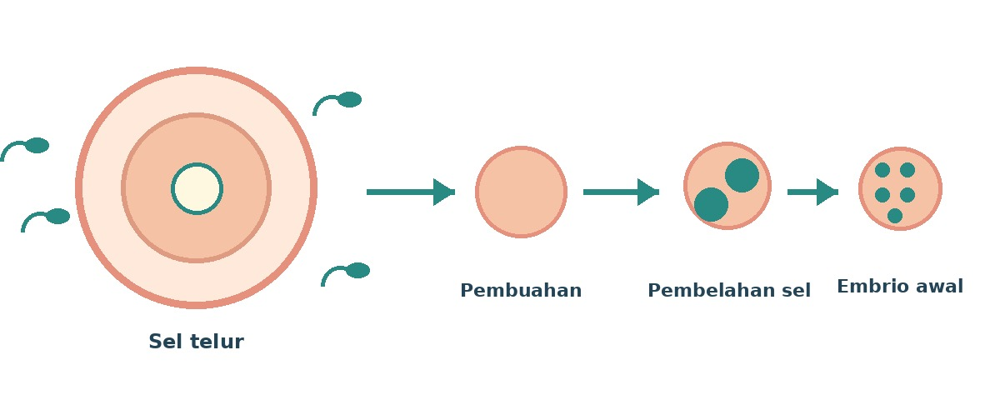
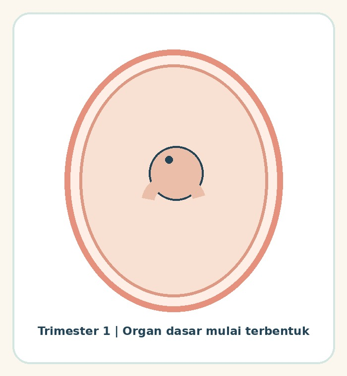
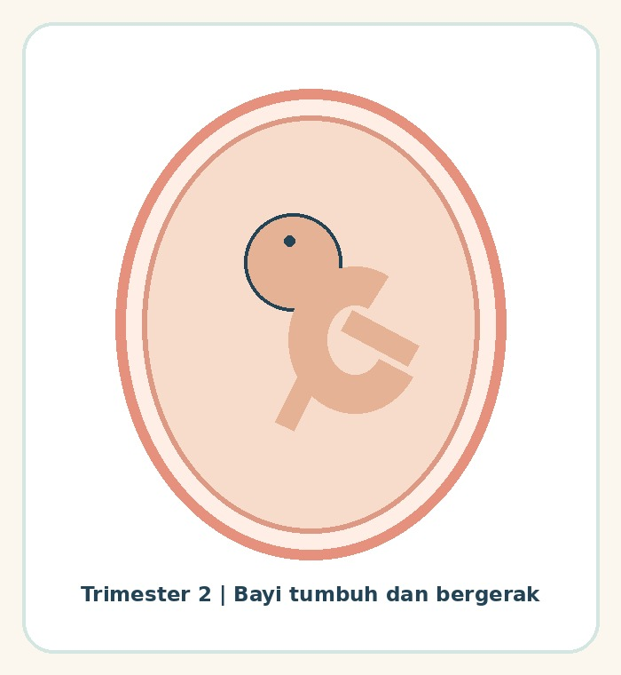
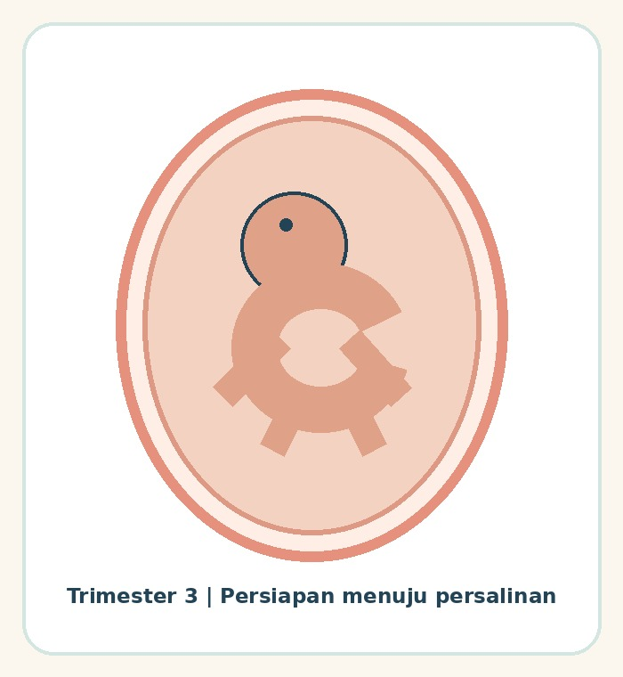

Kehamilan adalah perjalanan yang berlangsung bertahap. Memahami proses dasarnya dapat membantu ibu dan keluarga menyiapkan pertanyaan untuk pemeriksaan serta mencari dukungan yang tepat. Setiap kehamilan berbeda, jadi informasi umum ini tidak dapat menggantikan pemeriksaan langsung.
Bagaimana kehamilan dimulai?
Pembuahan terjadi saat sel sperma bertemu dengan sel telur, umumnya di saluran tuba. Sel yang terbentuk kemudian membelah sambil bergerak menuju rahim. Jika kumpulan sel tersebut menempel pada lapisan rahim, proses ini disebut implantasi dan perkembangan berlanjut.
Plasenta berkembang selama kehamilan. Organ ini membantu pertukaran oksigen dan zat gizi dari ibu kepada janin, serta membantu membawa kembali zat sisa untuk dikeluarkan.

Bagaimana usia kehamilan dihitung?
Usia kehamilan biasanya dihitung sejak hari pertama menstruasi terakhir, bukan sejak hari pembuahan. Karena itu, hitungan usia kehamilan dapat sekitar dua minggu lebih panjang daripada waktu sejak pembuahan. Bidan atau dokter dapat membantu memperkirakan usia kehamilan dan hari perkiraan lahir berdasarkan riwayat menstruasi serta pemeriksaan yang diperlukan.
Perkembangan dalam tiga trimester
Trimester membagi masa kehamilan menjadi tiga tahap. Batas minggu berikut adalah pembagian umum; perkembangan dan pengalaman setiap ibu dapat berbeda.

Awal pembentukan
Pembuahan dan perkembangan awal berlangsung, termasuk pembentukan dasar organ. Sebagian ibu dapat mengalami mual, mudah lelah, atau lebih sering buang air kecil.

Pertumbuhan berlanjut
Janin bertumbuh dan bergerak. Waktu pertama kali ibu merasakan gerakan dapat berbeda-beda.

Menjelang persalinan
Berat janin bertambah dan organ terus matang. Keluarga dapat mulai membicarakan tempat bersalin, pendamping, transportasi, dan rencana rujukan bersama tenaga kesehatan.
Seluruh ilustrasi pada bagian ini diambil dari Panduan Kehamilan Sehat yang menjadi bahan penyusunan artikel.
Langkah awal yang dapat dilakukan
- Mulai pemeriksaan kehamilan sedini mungkin. Bicarakan jadwal yang sesuai dengan bidan atau dokter. WHO merekomendasikan sedikitnya delapan kontak dengan tenaga kesehatan selama kehamilan; jadwal pribadi dapat disesuaikan dengan kondisi dan layanan setempat.
- Bawa dan gunakan Buku KIA. Buku ini membantu ibu dan keluarga mencatat serta memantau kesehatan ibu dan anak selama masa kehamilan dan setelahnya.
- Pilih makanan beragam dan matang. Tanyakan kebutuhan zat besi, asam folat, atau suplemen lain kepada tenaga kesehatan.
- Hindari rokok, asap rokok, dan alkohol. Sebelum menggunakan obat, jamu, atau suplemen, pastikan keamanannya kepada dokter atau bidan.
- Libatkan orang tepercaya. Dukungan untuk menemani pemeriksaan, membantu kebutuhan sehari-hari, dan mendengarkan keluhan dapat membuat ibu merasa lebih didampingi.
Kenali tanda bahaya
Segera cari pertolongan di fasilitas kesehatan jika muncul perdarahan, nyeri perut hebat, sakit kepala berat atau pandangan kabur, kejang, demam tinggi, muntah hingga sulit minum, sesak napas berat, atau air ketuban keluar sebelum waktunya. Setelah gerakan janin mulai terasa, perubahan atau berkurangnya gerakan dari pola biasanya juga perlu segera dinilai tenaga kesehatan.
Jangan menunda pertolongan untuk menunggu balasan pesan atau mencoba mengobati sendiri.
Kehamilan dijalani bersama
Ibu tidak harus melalui semua persiapan sendirian. Pasangan dan keluarga dapat membantu mencatat pertanyaan, menemani kunjungan, menyiapkan transportasi, dan mendukung ibu mengikuti saran tenaga kesehatan. Pemeriksaan rutin membantu tenaga kesehatan memantau kondisi ibu dan janin serta menentukan tindak lanjut yang dibutuhkan.
Catatan kesehatan: Artikel ini disusun untuk edukasi umum berdasarkan sumber yang tercantum. Artikel ini bukan alat diagnosis dan tidak menggantikan konsultasi, pemeriksaan, atau saran personal dari dokter maupun bidan.